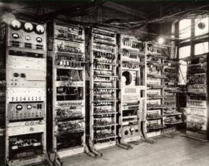
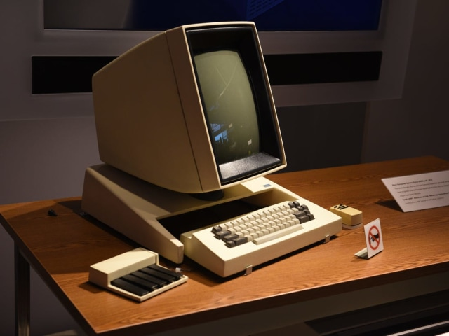
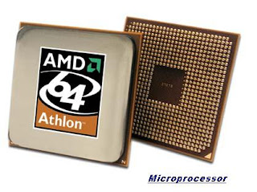
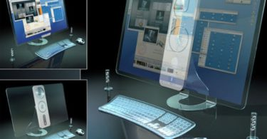

Generasi Pertama (1940 - 1956)

Pada tahun 1946, komputer diciptakan melalui tabung vakum sebagai komponen utamanya dan beratnya sendiri hampir 30 ton. Namun, hal ini sangat tak efisien karena membutuhkan daya listrik yang besar serta panas yang berlebihan.
Generasi pertama ini juga masih dapat menggunakan bahasa mesin yang hanya dapat dimengerti oleh komputer itu sendiri. Inputnya juga menggunakan sebuah pita kertas dan punched card dengan output berupa printer. Pada waktu tertentu juga membutuhkan sekitar 1 juta dollar hanya untuk mendapatkan suatu program.
Contohnya adalah komputer IBM 701 buatan tahun 1953 sebagai komputer komersial dengan ukuran besar dan IBM 705 serta dirancang pada tahun 1959 untuk kebutuhan industri.
Ciri-Ciri
-
Program tersebut dibuat dalam bahasa mesin.
-
Program Menggunakan konsep storage program.
-
Komponen yang digunakan dalam komputer generasi pertama adalah tabung hampa udara
-
Ukuran fisiknya sungguh besar, sehingga membutuhkan daya listrik yang cukup besar.
-
Dapat disimpan pada magnetic tape juga pada magnetic disk.
Generasi Kedua (1956 - 1963)

Generasi tabung vakum ini mengalami perkembangan, sehingga tergantikan juga oleh teknologi transistor sebagai komponen utama yang sangat canggih. Generasi ini sendiri mulai digunakan pada tahun 1959 sampai tahun 1965.
Beberapa kelebihan yang dimiliki diantaranya adalah ukuran yang lebih kecil, tak terlalu panas, serta risiko mengalami kegagalan cukup kecil. Generasi ini juga sudah tidak lagi menggunakan berbagai bahasa mesin seperti sebelumnya. Digantikan juga dengan menggunakan bahasa FORTRAN serta bahasa COBOL. Oleh sebab itu, dapat dikatakan bahwa komputer transistor tentu masih jauh lebih baik jika dibandingkan dengan tabung vakum.
Contohnya adalah pada komputer PDP-5 dan PDP-8 buatan tahun 1963 sebagai komputer mini komersial pertama. Selain itu terdapat juga komputer IBM 7070, IBM 1400, NCR 300, dan lain sebagainya.
Ciri-Ciri
-
Kapasitas memori utamanya cukup besar.
-
Komponen yang digunakan dalam generasi transistor yang jauh lebih kecil jika dibandingkan dengan tabung hampa udara.
-
Menggunakan magnetic tape serta magnetic disk yang berbentuk removable disk.
-
Memiliki kemampuan proses real-time serta time sharing.
-
Proses operasinya juga tergolong lebih cepat.
-
Orientasinya pada komputer generasi ini ada pada aplikasi bisnis dan teknik.
Generasi Ketiga (1964 - 1971)

Generasi ini disebut juga dengan generasi ketiga. Bentuk transistor pada komputer ini diperkecil dan diletakkan pada IC bersamaan dengan beberapa resistor serta kapasitor. Komputer generasi ini pertama kali dikembangkan oleh Jack Kilby yang merupakan seorang insinyur listrik.
Kelebihannya komputer generasi ini kecepatannya yang cukup efisien. Selain itu, komputer generasi ini merupakan komputer yang pertama kali menggunakan monitor serta keyboard. Setelah mengalami kemajuan jika dibandingkan dengan generasi sebelumnya yang menggunakan kertas. Komputer ini pun laris di pasaran.
Terlebih lagi, karena dibandrol dengan harga yang cukup murah, sehingga pada masa tersebut orang-orang mampu membelinya. Contohnya adalah pada komputer IBM S/30. NOVA, CDC 3000, PDP-11, dan lain sebagainya.
Ciri-Ciri
-
Komponen yang digunakan diantaranya adalah IV (Integrated Circuits) yang terdiri atas ratusan atau ribuan transistor dalam bentuk hybrid integrated circuits serta monolithic integrated circuits.
-
Proses operasinya juga jauh lebih cepat serta lebih tepat, kapasitas memori komputer yang digunakan juga jauh lebih besar.
-
Ukuran fisiknya jauh lebih kecil, sehingga penggunaan listrik yang digunakan juga lebih hemat.
-
Menggunakan magnetic disk yang sifatnya ialah random access.
-
Dapat melakukan berbagai multiprocessing serta multiprogramming.
-
Alat input-output mengalami pengembangan dengan menggunakan visual display terminal.
-
Generasi ini juga dapat melakukan komunikasi data dari satu komputer dengan komputer lainnya.
Generasi Keempat (1971 - Sekarang)

Generasi mikroprosesor pertama kali dibuat oleh IBM pada tahun 1971. Kemudian, pada tahun 1984, perusahaan Apple merilis Macintosh. Sejarah komputer serta perkembangannya selanjutnya memasuki masa mikroprosesor yang mana masih digunakan oleh beberapa masyarakat Indonesia hingga saat ini.
Bersamaan dengan generasi mikroprosesor ini, lahirlah juga internet. Tampilan monitornya juga masih menggunakan satu warna atau green color. Selain itu, dikembangkan juga sebuah chip sebagai memori komputer.
Seiring dengan berkembangnya waktu, para pakar mencoba untuk melengkapi apa-apa yang belum ada yaitu PC-Compatible. Dengan adanya generasi ini membuat istilah PC mulai bermunculan. Selain itu, ada perangkat yang mulai dikembangkan untuk perorangan, sehingga mudah dibawa kemana-mana yaitu pada laptop.
Beberapa contoh komputer generasi keempat ini diantaranya adalah IBM Pentium II, Apple II, IBM 370, IBM PC/386 dan lain-lain.
Ciri-Ciri
-
Memakai Large Scale Integration (LSI) yang berasal dari pemadatan ribuan IC yang kemudian diubah menjadi chip.
-
Memakai mikroprosesor yang bentuknya berupa chip yang berfungsi untuk memori komputer.
-
Dikembangkan dengan Very Large Scale Integration (VLSI).
Generasi Kelima (Sekarang - Masa depan)

Generasi yang terbaru dari perkembangan komputer adalah munculnya teknologi bernama AI yang memiliki kecerdasan buatan, sehingga dapat melakukan input dengan lebih baik. Bahkan, dengan teknologi ini, kamu juga dapat menginput bahasa yang digunakan dalam sehari-hari, dengan menyesuaikan keadaan serta mempelajari lingkungan sekitar.
Ada banyak developer yang hingga saat ini yang telah mulai menggunakan generasi komputer AI. Bahkan, generasi ini juga disebut juga sebagai komputer masa depan. Kemudian, dikembangkanlah oleh intel serta microsoft yang diprakarsai oleh Bill Gates dan merupakan pionir dari standar hardware dan software di seluruh dunia.
Generasi AI yang terbaru adalah komputer Pentium Empat yang dikeluarkan oleh Intel Corporation. Meskipun komputer generasi ini memiliki bentuk yang kecil serta sederhana, tetapi tetap memiliki kecepatan serta kecanggihan yang tidak perlu diragukan lagi. Seiring dengan berjalannya waktu, komputer generasi AI juga digunakan pada tablet, notebook, dan sebagainya.
Contohnya adalah pada komputer IBM 370 yang menggunakan Intel 4004 mikroprosesor yang dikembangkan pertama kali pada tahun 1971 oleh suatu perusahaan Intel Corporation dengan menggunakan chip mikroprosesor.
Ciri-Ciri
-
Penggunaan LSI (Large Scale Integration) yang kemudian disebut juga sebagai Bipolar Large Scale Integration.
-
Menggunakan mikroprosesor serta semikonduktor yang berbentuk chip untuk penggunaan memori komputer.
-
Personal computer atau PC k mulai berkembang sejak tahun 1977. Contohnya komputer Apple II serta komputer desktop yang dikembangkan oleh Xerox Corporation.
-
Pada tahun 1981, komputer kemudian mulai banyak menggunakan sistem Window dan mouse.